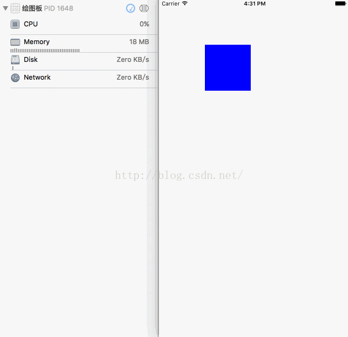
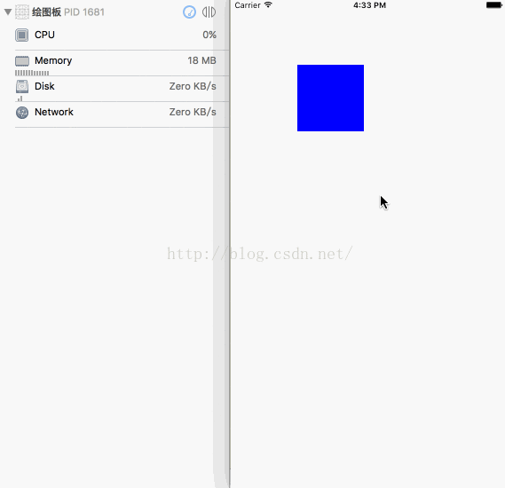
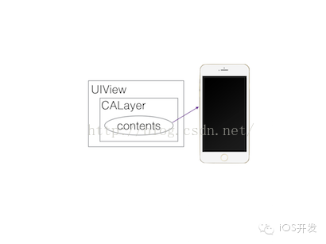
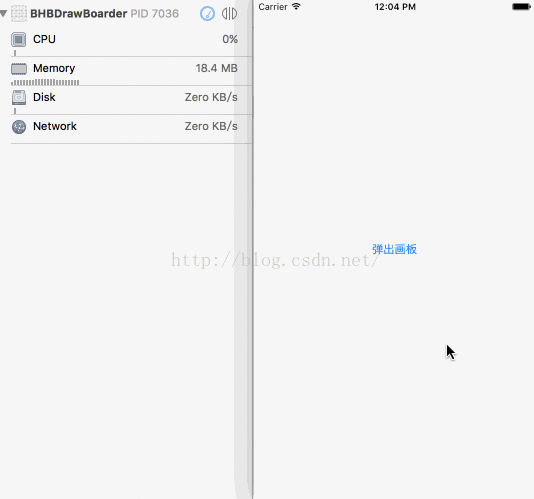

在平日的开发中，随意覆盖drawRect方法，稍有不慎就会让你的程序内存暴增。下面我们来看一个例子。 
如图我们看到左侧内存的状况随着手指的绘制逐渐恶化。另外细心的同学可以观察到，点击图中蓝色矩形按钮之后，便会弹出画板，而这时并没有进行任何的手指绘制，内存就突变为 114 MB ，然后每当手指绘制开始时，内存立即增加到 300 MB 左右稳定下来。对于正常的 iOS App 来讲，这么大的内存消耗是不能容忍的。
下面分析一下原因：
可能的原因有两个，一是在手指绘制的过程中创建的大量点对象没有及时释放或者其他资源没有及时释放。
二是系统在绘制的过程中开始大量消耗内存。
第一个原因，手指绘制的过程中创建的大量点对象没有及时释放或者其他资源没有及时释放。这一点我们暂时排除以节省时间，因为这个画板功能工程是用ARC写的，并且我们已经做过代码检查和使用Instruments工具来检测内存使用情况，这里并没有所谓的对象没有及时释放的问题存在。
第二个原因，系统在绘制的过程中开始大量消耗内存。首先我们曾经注意到一个诡异并且不寻常的事情就是，当黄色的画板刚刚弹出的时候内存就瞬间从 18MB 暴增至 114MB 。这一点更加说明第一个原因不是问题所在，因为这时手指还没有进行任何绘制，也就是说不存在任何点与线的对象，那么内存怎么会暴增呢？
这时我们要考虑这个画板功能是如何实现的，画板分为两步，第一步记录用户手指的轨迹，这一步会生成大量点的对象（已排除嫌疑）。第二步绘制到视图或者图层上，我们平常使用频繁的绘图方式基本上是 Quarz2D 的那套 C 语言框架，而绘制代码所在的地点在哪呢？我们今天的主角终于上场了－－drawRect。
下面我们来看一段画板功能绘制的代码：
- (void)drawRect:(CGRect)rect
{
if (!self.paths.count) return;
CGContextRef ctx = UIGraphicsGetCurrentContext();
for (BHBPaintPath *path in self.paths) {
CGContextSaveGState(ctx);
[[UIColor blackColor] set];
[path stroke]; // 关键的一步绘制
CGContextRestoreGState(ctx);
}
}
去掉绘图上下文栈和其余判断边界的代码，我们只是在当前view上绘制了n条黑色的线。看起来普普通通的绘图方式，怎么会导致内存的剧增呢？我们现在说罪魁祸首是drawRect证据并不充分。我们回想画板刚弹出时的内存状况，接下来我们注释掉drawRect所有的代码。运行的效果图如下：

效果立竿见影， 注释掉drawRect之后，内存立刻恢复正常，我们终于抓到了消耗内存的恶鬼，问题就出在对drawRect方法的覆盖。 那么抓到了犯人，本文是否应该完结了？非也非也，我们虽说知道了内存暴增的原因，但是我们并没有深入的去分析drawRect为什么对内存的影响这么大，而且我们也没有给出问题的解决方案。请接着往下看。
那么现在我们分析一下drawRect导致内存暴增的真正原因：
重写drawRect为何会导致内存大量上涨？
要想搞明白这个问题，我们需要撸一撸在 iOS 程序上图形显示的原理。在 iOS 系统中所有显示的视图都是从基类UIView继承而来的，同时UIView负责接收用户交互。 但是实际上你所看到的视图内容，包括图形等，都是由UIView的一个实例图层属性来绘制和渲染的，那就是CALayer。
CALayer类的概念与UIView非常类似，它也具有树形的层级关系，并且可以包含图片文本、背景色等。它与UIView最大的不同在于它不能响应用户交互，可以说它根本就不知道响应链的存在，它的 API 虽然提供了 “某点是否在图层范围内的方法”，但是它并不具有响应的能力。
在每一个UIView实例当中，都有一个默认的支持图层，UIView负责创建并且管理这个图层。实际上这个CALayer图层才是真正用来在屏幕上显示的，UIView仅仅是对它的一层封装，实现了CALayer的delegate，提供了处理事件交互的具体功能，还有动画底层方法的高级 API。
可以说CALayer是UIView的内部实现细节。
脑补了这么多，它与今天的主题drawRect有何关系呢？别着急，我们既然已经确定CALayer才是最终显示到屏幕上的，只要顺藤摸瓜，即可分析清楚。CALayer其实也只是 iOS 当中一个普通的类，它也并不能直接渲染到屏幕上，因为屏幕上你所看到的东西，其实都是一张张图片。而为什么我们能看到CALayer的内容呢，是因为CALayer内部有一个contents属性。contents默认可以传一个id类型的对象，但是只有你传CGImage的时候，它才能够正常显示在屏幕上。 所以最终我们的图形渲染落点落在contents身上如图。

contents也被称为寄宿图，除了给它赋值CGImage之外，我们也可以直接对它进行绘制，绘制的方法正是这次问题的关键，通过继承UIView并实现-drawRect:方法即可自定义绘制。-drawRect: 方法没有默认的实现，因为对UIView来说，寄宿图并不是必须的，UIView不关心绘制的内容。如果UIView检测到-drawRect:方法被调用了，它就会为视图分配一个寄宿图，这个寄宿图的像素尺寸等于视图大小乘以contentsScale(这个属性与屏幕分辨率有关，我们的画板程序在不同模拟器下呈现的内存用量不同也是因为它) 的值。
那么回到我们的画板程序，当画板从屏幕上出现的时候，因为重写了-drawRect:方法，-drawRect :方法就会自动调用。 生成一张寄宿图后，方法里面的代码利用Core Graphics去绘制 n 条黑色的线，然后内容就会缓存起来，等待下次你调用-setNeedsDisplay时再进行更新。
画板视图的-drawRect:方法的背后实际上都是底层的CALayer进行了重绘和保存中间产生的图片，CALayer的delegate属性默认实现了CALayerDelegate协议，当它需要内容信息的时候会调用协议中的方法来拿。当画板视图重绘时，因为它的支持图层CALayer的代理就是画板视图本身，所以支持图层会请求画板视图给它一个寄宿图来显示，它此刻会调用：
- (void)displayLayer:(CALayer *)layer;
如果画板视图实现了这个方法，就可以拿到layer来直接设置contents寄宿图，如果这个方法没有实现，支持图层CALayer会尝试调用：
- (void)drawLayer:(CALayer *)layer inContext:(CGContextRef)ctx;
这个方法调用之前，CALayer创建了一个合适尺寸的空寄宿图（尺寸由bounds和contentsScale决定）和一个Core Graphics的绘制上下文环境，为绘制寄宿图做准备，它作为ctx参数传入。在这一步生成的空寄宿图内存是相当巨大的，它就是本次内存问题的关键，一旦你实现了CALayerDelegate协议中的-drawLayer:inContext:方法或者UIView中的-drawRect:方法（其实就是前者的包装方法），图层就创建了一个绘制上下文，这个上下文需要的内存可从这个公式得出：图层宽*图层高*4 字节，宽高的单位均为像素。而我们的画板程序因为要支持像猿题库一样两指挪动的效果，我们开辟的画板大小为：
_myDrawer = [[BHBMyDrawer alloc] initWithFrame:
CGRectMake(0, 0, SCREEN_SIZE.width*5, SCREEN_SIZE.height*2)];
我们的画板程序的画板视图它在iPhone6s plus机器上的上下文内存量就是 1920*2*1080*5*4 字节， 相当于79MB内存，图层每次重绘的时候都需要重新抹掉内存然后重新分配。它就是我们画板程序内存暴增的真正原因。
最终我们将内存暴增的原因找出来了，那么我们有没有合理的解决方案呢？
我认为最合理的办法处理类似于画板这样画线条的需求直接用专有图层CAShapeLayer。让我们看看它是什么：
CAShapeLayer是一个通过矢量图形而不是bitmap来绘制的图层子类。用CGPath来定义想要绘制的图形，CAShapeLayer会自动渲染。它可以完美替代我们的直接使用Core Graphics绘制layer，对比之下使用CAShapeLayer有以下优点：
渲染快速。CAShapeLayer 使用了硬件加速，绘制同一图形会比用 Core Graphics 快很多。
高效使用内存。一个 CAShapeLayer 不需要像普通 CALayer 一样创建一个寄宿图形，所以无论有多大，都不会占用太多的内存。
不会被图层边界剪裁掉。
不会出现像素化。
所以最终我们的画板程序使用CAShapeLayer来实现线条的绘制，性能非常稳定，效果图如下：

总结一下绘制性能优化原则：
绘制图形性能的优化最好的办法就是不去绘制。
利用专有图层代替绘图需求。
不得不用到绘图尽量缩小视图面积，并且尽量降低重绘频率。
异步绘制，推测内容，提前在其他线程绘制图片，在主线程中直接设置图片。
本文最后一个效果图为仿写猿题库练题画板功能，demo请在github搜索 BHBDrawBoarderDemo。 或者直接戳这里: https://github.com/bb-coder/BHBDrawBoarderDemo。